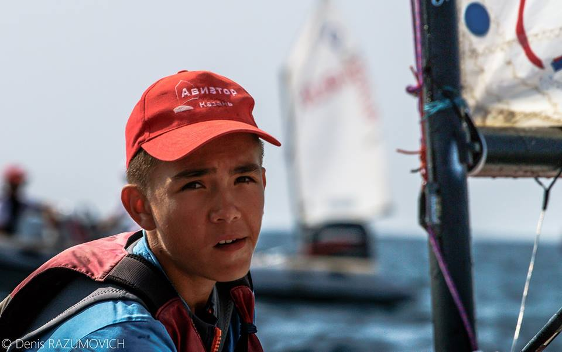

 Мулюков Айдар обучается в школе №68 со второго класса и проявил себя как дисциплинированный ученик и надёжный друг. За время учёбы показал удовлетворительные знания в школьных предметах, но если постарается, то может учиться только на четвёрки и пятёрки. Зарекомендовал себя как старательный, дисциплинированный, внимательный и активный ученик. Учится в полную меру своих сил, иногда нуждается в помощи. Проявляет заинтересованности к учебе, учится неплохо, при большем старании мог бы учиться только на «хорошо» и «отлично». На уроках чаще всего внимательный, активный, выполняет домашние задания, помогает товарищам. Заинтересован в получении новых знаний из разных областей науки и культуры. Любит такие предметы, как физика и алгебра. К выполнению общественных поручений относится добросовестно. Активно участвовал в общественной жизни школы, в культмассовых мероприятиях. Был участником в школьной, городской олимпиаде. Правила поведения всегда сознательно выполняет. Состояние здоровья хорошее, юноша любит занятия физкультурой и спортом. Занимается плаванием, парусным спортом. Характер веселый, уравновешенный, рассудительный, дисциплинированный, самостоятельный. Ведет здоровый образ жизни. Вредных привычек не имеет. Воспитывается в полной семье, где созданы все условия для учебы и отдыха.